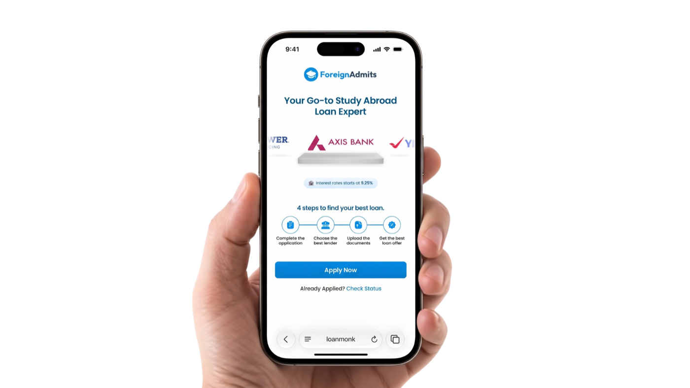

LoanMonk · ForeignAdmits
Pre-approved education loans in under 2 minutes
One online flow that replaced weeks of running between bank branches: fill in your details once, get matched to the banks you're eligible for, hear back the same day.

- Client
- ForeignAdmits
- Role
- Product Designer
- Timeline
- 3 months
- Team
- Me + 1 Product Manager
- Impact
- ₹1,500 crore approved · 100K+ students
01Overview
ForeignAdmits helps Indian students get into and finance universities abroad. A major bottleneck in that journey was the education loan process itself: slow, fragmented, and entirely offline.
Loan Monk was built to collapse that process into a single online flow. Students fill in their details once, get matched to the banks they're eligible for, and hear back the same day, instead of weeks of running between branches.
02The problem
Getting an education loan for study abroad meant students had to:
Visit multiple banks in person
Repeating the same conversation with loan officers at each one.
Carry and resubmit physical documents
Different banks asked for different document sets, so there was no single "apply once" path.
Wait without visibility
No way to know which banks they'd actually qualify with until deep into a slow, manual process.
This was especially painful because the audience, students preparing to move abroad for their program, had a hard deadline (visa and admission timelines) and no patience for a process that could stretch on for weeks.
Goal
Bring the banks to the student, not the other way around: one form, multiple eligible offers, same-day answers.
03Process
The core design problem was less "how do we make forms pretty" and more "how do we make one flow work across banks with different eligibility rules, document requirements, and loan types, without the student feeling that complexity."
Mapped the end-to-end user flow first
From a student landing on the platform, through filling in their profile and academic and financial details, to submitting to eligible banks and tracking responses.
Designed around bank API integrations
Applications needed to land directly in each partner bank's own portal, so the flow had to collect exactly what each bank required, structured the way each bank's system expected it.
Worked closely with the PM
To translate bank eligibility criteria (loan type, collateral requirements, academic profile) into form logic that could branch per bank without becoming a maze for the student.
04Solution
Three screens carried most of the complexity.
Bank selection
Once a student's profile was in, this screen showed which banks they were actually eligible for, turning "which bank do I even try?" from a guessing game into a clear, filtered list.
Loan type
Students chose between secured and unsecured loans up front, which determined the downstream document and eligibility requirements, keeping the rest of the flow relevant instead of generic.
Document upload
The single biggest real-world pain point: every bank wanted a different set of documents. The upload flow adapted to the chosen bank(s) and loan type, so students only saw and submitted what was actually required.
My role was pure design: end-to-end UX for the flow above, working from research and bank requirements through to final screens, in close collaboration with the PM on logic and bank partnerships.
View the Figma file ↗05Results
Beyond the headline number, the shift in experience was the real win: students went from running between bank branches with a folder of documents to filling in one form and getting back multiple comparable offers the same day.
₹1,500 cr
Loans approved
100,000+
Students on the platform
Same day
Bank response time
Multiple
Offers per student
Students could compare and choose.
06Learnings
Financial products need trust as much as usability
A big part of the job was making a process that involved sensitive financial and academic data feel transparent and safe, not just fast.
Cross-institution flows live and die on edge cases
The real design work wasn't the happy path; it was handling the branching eligibility and document logic across banks without the student ever feeling the seams.
A two-person team means owning the "why"
Working as designer + PM meant owning more of the reasoning behind decisions, not just the "what": closer to bank requirements and business logic than a typical design role on a larger team.